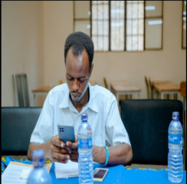

Benjamin Iriganje
About Me
My name is Benjamin Iriganje. I am a passionate software development student with a strong interest in web and mobile application development. Skilled in programming, problem-solving, and teamwork. Currently pursuing advanced software engineering knowledge through BYU-Idaho and university studies. I am eager to apply my skills in real-world projects and contribute to innovative technology solutions. I am also a dedicated learner, always seeking opportunities to grow and stay updated with the latest industry trends. And I am committed to make a positive impact in the tech industry and contribute to the development of innovative solutions that can improve people lives.

Bujumbura, Burundi
Official Flag of Burundi
Bujumbura is the economic capital of our country, Burundi. It is the most beautiful city compared to other cities in the country. It is located in the west of the country and is bordered by the waters Lake Tanganyika. This city is the most visited, everyone desires to visit and live in this city. Overall, it is very magnificent.